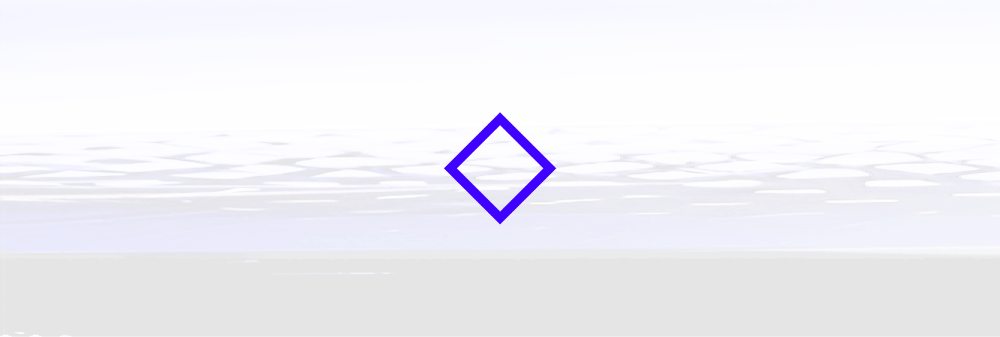
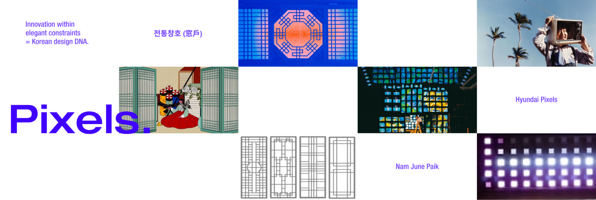
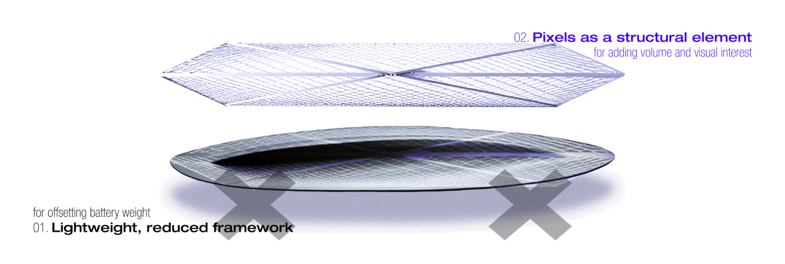
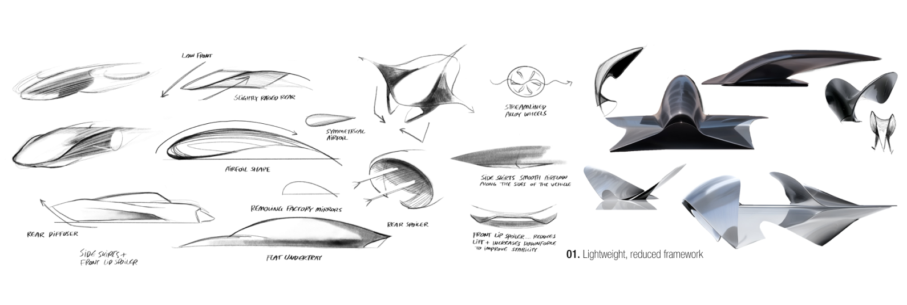
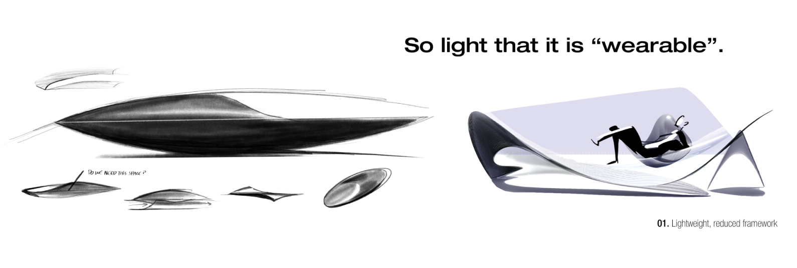
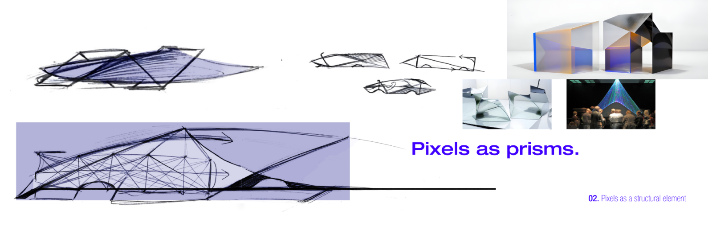

Duration
Ongoing, 2024-2025
Supervised by
Prof. Dr. Wickenheiser, Sebastian Bekmann
Project type
Transportation design concept for project “Hyundai N” sponsored by Hyundai
Description
Reimagining the role of Hyundai pixels for the future line-up of IONIQ N series.
Brief
What is Next for the IONIQ N series?
Summary
“Pixels 2.0” is a proposal for pixels, an iconic design element of Hyundai, to play an evolved role in the N series, where they are reimagined as light-refracting glass artefacts that reshape our connection to the environment while supporting the high performance of N vehicles without compromising aesthetics. Here, we move beyond pixels as an artefact that simply emits artificial light and towards a new role that utilises natural light in the environment to shape the N experience.




